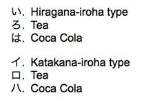
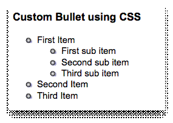
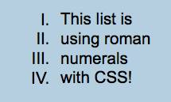

Display Lists


People don't read web sites, they scan them.

Using lists is an excellent way to display lots of information in a manner that can be easily scanned and understood.With a little CSS it is also easy to convert a list into an effective menu system.